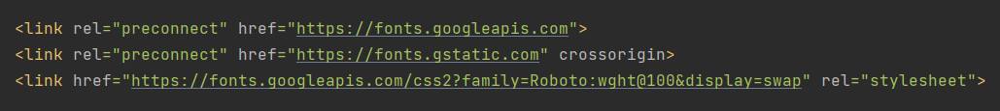
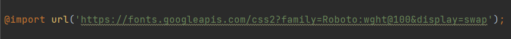
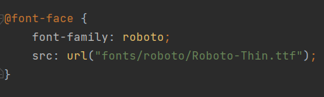

Wat ?
Kort door de bocht, webfonts zijn fonts die niet standaard op je computer bestaan. Ze worden samen met de html, css en javascript meegestuurd naar je browser.
Hoe ?
Het "meesturen" kan door middel van een link in de css of de head van je html. Maar dit is volgens de GDPR-wetgeving geen goed idee. Google-fonts bijvoorbeeld verzamelt IP-adressen van computers die hun fonts via een links binnenhalen en dat mag van Europa niet.
Voorbeeld link in html:

Voorbeeld link in css:

Een betere methode is om de files van het font dat je wil gebruiken te downloaden en aan je project toe te voegen. In je css kan je dan de link leggen naar de (in de meeste gevallen) *.ttf files.
Voorbeeld hoe je een *.ttf file kan linken aan je project:

Meer informatie over wat webfonts zijn en hoe je ze kan gebruiken vind je hier.
Waar ?
Er bestaan tal van sites waar je (al dan niet gratis) fonts kan downloaden, hier vind je een lijstje met een aantal van deze sites: